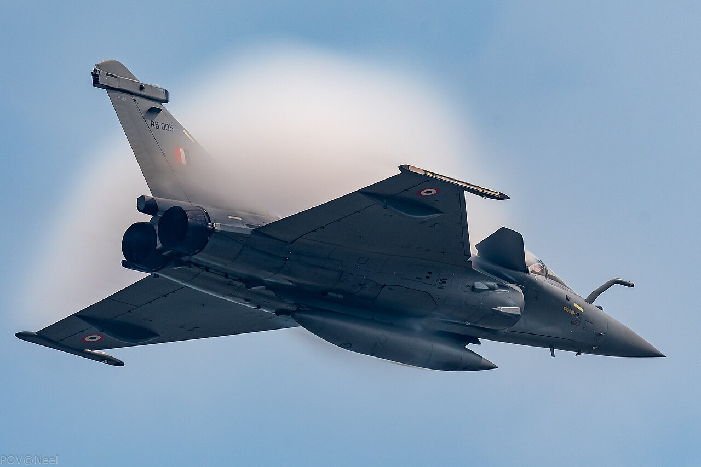
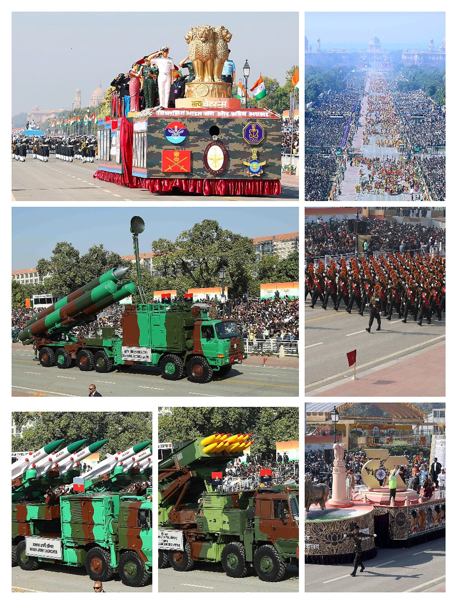

Geopolitics · Diplomacy
India and the United States: From Estrangement to Partnership

For much of the Cold War, India and the United States eyed each other warily across an ideological gulf. Today they call themselves natural partners. The journey between those two states of mind is one of the great diplomatic turnarounds of the modern era.
The estranged democracies
Non-aligned India leaned toward the Soviet Union for arms and diplomatic cover; Washington tilted toward Pakistan. The low point came in 1971, when a US carrier group steamed into the Bay of Bengal during the war that birthed Bangladesh. For decades, the world's two largest democracies were strangers.
A partnership of convergence, not a treaty of obligation.
The turn

The end of the Cold War, India's 1991 economic opening, and a shared wariness of a rising China slowly changed the calculus. The breakthrough was the 2008 civil nuclear deal, which ended India's nuclear isolation and signalled a new strategic trust.[1]
A defence partnership
From almost nothing, defence ties have grown into joint exercises, major arms purchases, and foundational agreements that let the two militaries share logistics and secure communications. The United States is now among India's largest defence and trade partners, and the two anchor the Quad.
The frictions
The partnership is real but not unconditional. India guards its strategic autonomy — buying Russian air defences, keeping its own line on global crises, and resisting any role as a junior partner. Trade disputes, visa rules and tariff fights flare regularly. This is a partnership of convergence, not a treaty alliance.
Why it endures
What holds it together is structural: democratic systems, a vast Indian-American diaspora, deep technology and education links, and a shared interest in an Asia not dominated by one power. The relationship has survived changes of government in both capitals — the surest sign it has become strategic rather than personal.
Sources & further reading
- "India–United States relations," Wikipedia.
All images via Wikimedia Commons, used under the licences shown on each file page.